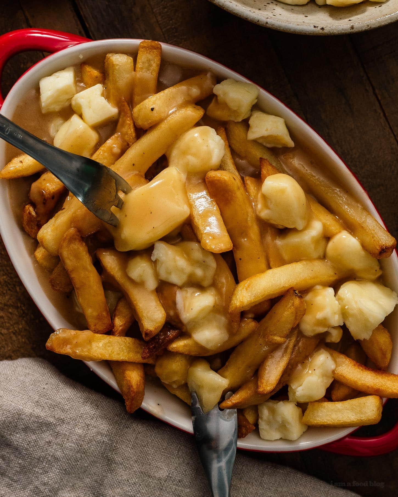

Poutine

Description
Poutine is a dish of french fries and cheese curds topped with a brown gravy.
It emerged in Quebec, in the late 1950s in the Centre-du-Québec region,
though its exact origins are uncertain and there are several competing claims regarding
its invention.
While poutine is now available at fine restaurants and fast-food chains alike,
it was completely unknown in the mid-20th century. The combination of fresh-cut fries,
cheese curds, and gravy first appeared in rural Québec snack bars in the late 1950s.
Though the precise origins of poutine are much debated, the dish was developed in stages.
Ingredients
- Butter
- Flour
- Garlic powder
- Onion powder
- Chicken broth
- Beef broth
- Worcestershire sauce
- Beef bouillon
- Apple cider vinegar
OK, you’ve got your components gathered! You’ve made the greatest fries,
you’ve whipped up a deliciously beefy gravy, you’ve bought some yummy cheese curds and
managed not to eat them all. You’re ready to make poutine!
Steps
- Make the best fries you possibly can! Our poutine recipe starts with homemade fries,
but you don’t have to break out the deep-fryer for this (that’s a relief, right?).
Baked fries are just so much easier, and we actually think that a little less grease
is nice, since you’ll be drenching them in gravy anyway.
- Make the gravy! Get it simmering in a saucepan while the fries bake.
- Assemble your poutine! See, that actually wasn’t that much work after all!
You can divide it between four individual plates, or serve it mounded on a big platter
for sharing. Just be sure to get the order right! First the fries, then the curds,
then drizzle it all with lots of hot gravy. By the time people are digging in,
the curds should be getting good and melty.